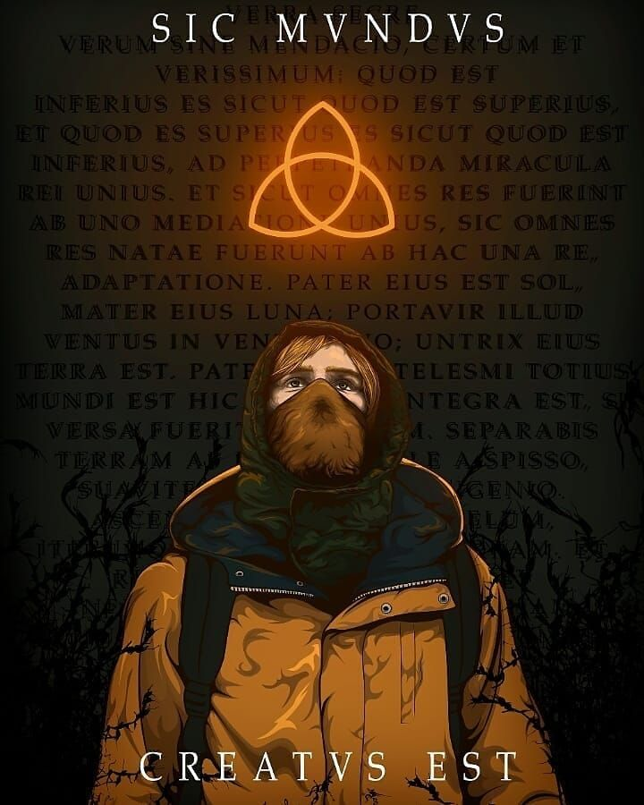

Tudo sobre Dark
Dark é uma aclamada série de televisão alemã de ficção científica e suspense, criada por Baran bo Odar e Jantje Friese para a Netflix. A trama explora os mistérios profundos da fictícia cidade de Winden e os segredos interligados de quatro famílias ao longo de múltiplos ciclos temporais.

Sinopse Geral
A história começa em 2019 com o desaparecimento misterioso de um menino chamado Mikkel Nielsen. Conforme as investigações avançam, segredos sombrios de Winden vêm à tona, revelando que uma caverna local esconde um buraco de minhoca que permite viagens no tempo em ciclos exatos de 33 anos (conectando os anos de 1953, 1986 e 2019, e posteriormente outras eras apocalípticas).
As 3 Temporadas
- 1ª Temporada: Estabelece o desaparecimento, as conexões entre as famílias Kahnwald, Nielsen, Doppler e Tiedemann, e o segredo da usina nuclear.
- 2ª Temporada: Expande os horizontes temporais, revelando os planos de Adam e Sic Mundus, além do impacto iminente do apocalipse em Winden.
- 3ª Temporada: Conclui a trilogia introduzindo o conceito de mundos paralelos (o mundo de Martha) e a busca pela raiz causal que originou todo o sofrimento e o nó temporal.
Produção
Conhecida por sua narrativa extremamente complexa, roteiro milimetricamente planejado do início ao fim e uma trilha sonora imersiva composta por Ben Frost, Dark foi a primeira série original alemã da Netflix, conquistando fãs e críticos em escala global pela precisão de seu enredo sobre paradoxos temporais.